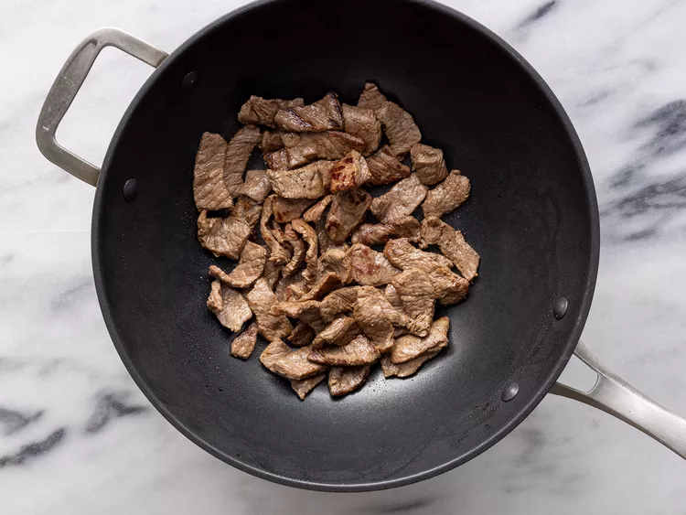

Quick Beef Stir-Fry
Fast meals is your one stop shop for recipies craftable under 30 Minuites or less!.
Cook Time: 25 Min
Ingredients List
- 2 tblsp Vegitable oil
- 1 pound beef sirloin, cut into 2-inch strips
- 1 1/2 cups fresh broccoli florets
- 1 red bell pepper, cut into matchsticks
- 2 carrots, thinly sliced
- 1 green onion, chopped
- 1 teaspoon minced garlic
- 2 tablespoons soy sauce
- 2 tablespoons sesame seeds, toasted
Directions
-
Gather All Ingredients

-
Heat vegetable oil in a large wok or skillet over medium-high heat; add beef and stir-fry until browned, 3 to 4 minutes.

-
Move beef to the side of the wok and add broccoli, bell pepper, carrots, green onion, and garlic to the center of the wok; stir-fry vegetables for 2 minutes.
-
Stir beef into vegetables and season with soy sauce and sesame seeds. Continue to cook and stir until vegetables are tender, about 2 more minutes.

-
Serve hot and enjoy!